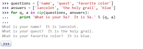
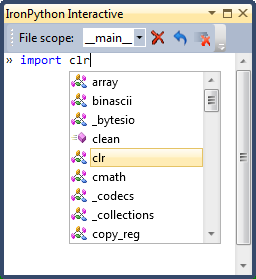

IronPython
the Python programming language for the .NET Framework
IronPython is an open-source implementation of the Python programming language which is tightly integrated with the .NET Framework. IronPython can use the .NET Framework and Python libraries, and other .NET languages can use Python code just as easily.
-
Download Python 2.7.3
-
Try Python in the browser
Quickly run Python code in your browser, without installing IronPython.
 -
Experience a more interactive .NET and Python development experience with Python Tools for Visual Studio.
Why IronPython?
IronPython is an excellent addition to the .NET Framework, providing Python developers with the power of the .NET framework. Existing .NET developers can also use IronPython as a fast and expressive scripting language for embedding, testing, or writing a new application from scratch.
The CLR is a great platform for creating programming languages, and the DLR makes it all the better for dynamic languages. Also, the .NET framework (base class library, presentation foundation, Silverlight, etc.) gives developers an amazing amount of functionality and power.
Announcements
July 6, 2012
IronPython 2.7.3 is now available!
This release includes support for the bz2, winsound, and _bisect modules, major improvements to the _ast module, improvements in Android support, improvements to pyc.py, and a new console that supports history and tab completion on all platforms.
See what's new in 2.7.3 for more information.
March 12, 2012
Important: IronPython 2.7.2.1 was released.
This release fixes a major issue with method lookups. Upgrading is strongly recommended.
March 11, 2012
IronPython 2.7.2 is now available!
This release includes the zipimport and sqlite3 modules, the ability for pyc.py to generate standalone executables, preliminary support for Android and Windows Phone 7, and numerous bug fixes.
Visit the blog for more information.
December 12, 2011
Update: The survey is now closed. Thanks for all of your responses!
The IronPython team would like to know more about how people are using IronPython and how they would like to see it evolve over the next year.
October 21, 2011
IronPython 2.7.1 was released.
IronPython 2.7.1 includes several new modules (unicodedata, csv, and ast) and a large number of bug fixes.
March 12, 2011
IronPython 2.7 Final was released.